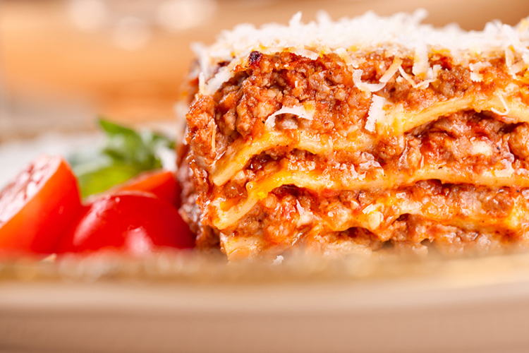

Classic Lasagne
Ingredients

| 2 tbsp olive oil |
| 750g lean beef mince |
| 90g pack prosciutto |
| half quantity of our tomato sauce (see the recipe), or 800g passata |
| 200ml hot beef stock |
| a little grated nutmeg |
| 300g pack fresh lasagne sheets |
| half quantity of our white sauce (see the recipe), or 520g ready-made sauce |
| 125g ball mozzarella, torn into thin strips |
This recipe will show you how to make a Lasagna using fresh ingredients
Method
- To make the meat sauce, heat the oil in a frying pan and cook the beef in two batches for about 10 mins until browned all over. Finely chop 4 slices of prosciutto, then stir through the meat mixture.
- Pour over our basic tomato sauce and stock, add the nutmeg, then season. Bring up to the boil, then simmer for 30 mins until the sauce looks rich.
- Heat oven to 180C/fan/160C/gas 4. Lightly oil an ovenproof dish (about 30 x 20cm). Spoon one third of the meat sauce into the dish, then cover with lasagne sheets. Drizzle over about one quarter of our classic white sauce.
- Repeat until you have 3 layers of pasta. Cover with the remaining white sauce, making sure you can’t see any pasta poking through.
- Scatter the mozzarella over the top. Arrange the rest of the prosciutto on top. Bake for 45 mins until the top is bubbling and lightly browned.
Nutritional information
| Calories |
Protein |
Fats |
Sugar |
| 1200KCal |
50g |
20g |
170g |